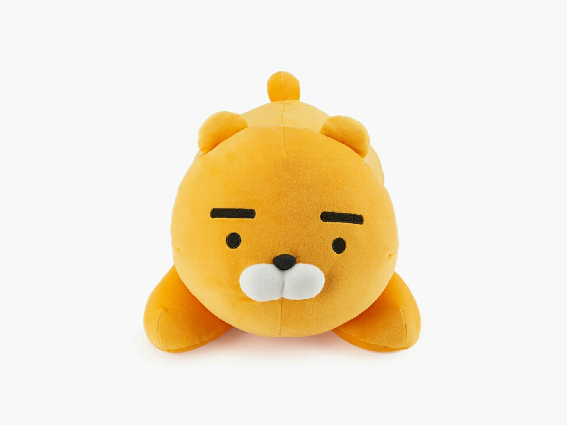

홈페이지로~
| 가수 - 제목 |
뮤직비디오 |
가사 |
| 잔나비 - 주저하는 연인들을 위해 |
|
나는 읽기 쉬운 마음이야
당신도 스윽 훑고 가셔요
달랠 길 없는 외로운 마음 있지
머물다 가셔요 음
내게 긴 여운을 남겨줘요
사랑을 사랑을 해줘요
할 수 있다면 그럴 수만 있다면
새하얀 빛으로 그댈 비춰 줄게요
그러다 밤이 찾아오면
우리 둘만의 비밀을 새겨요
추억할 그 밤 위에 갈피를 꽂고 선
남몰래 펼쳐보아요
나의 자라나는 마음을
못 본채 꺾어 버릴 수는 없네
미련 남길바엔 그리워 아픈 게 나아
서둘러 안겨본 그 품은 따스할 테니
그러다 밤이 찾아오면
우리 둘만의 비밀을 새겨요
추억할 그 밤 위에 갈피를 꽂고 선
남몰래 펼쳐보아요
언젠가 또 그날이 온대도
우린 서둘러 뒤돌지 말아요
마주보던 그대로 뒷걸음치면서
서로의 안녕을 보아요
피고 지는 마음을 알아요 다시 돌아온 계절도
난 한 동안 새 활짝 피었다 질래 또 한번 영원히
그럼에도 내 사랑은 또 같은 꿈을 꾸고
그럼에도 꾸던 꿈을 미루진 않을래
|
| 케이시 - 진심이 담긴 노래 |
|
어떻게 전할까
널 향한 내 진심
말로는 부족해
나 이렇게 노래해
겁이 많고 불안한 내가
너를 만나서 행복을 알게 됐어
기억나 우리 둘
처음 만난 그 날
많이 어색하고
낯설기만 했던 날
그러다 우연이 계속되고
그렇게 사랑하게 되고
그래서 행복하고
하루의 시작은
너와 눈을 마주보며 미소 짓는 일
어느새 닮아 있는 너와 나
괜스레 눈물이 나
너라는 사람이
내게 선물해준 모든 순간순간이
벅차도록 너무 소중해서
사랑을 알게 해줘서
정말 고마워
나를 웃게 하고
울리기도 하고
표현이 서툴던
내가 많이 변했어
누군가를 기다리는 일이
이렇게 설레는 일인지
이조차도 행복해
하루의 시작은
너와 눈을 마주 보며 미소 짓는 일
어느새 닮아 있는 너와 나
괜스레 눈물이 나
너라는 사람이
내게 선물해준 모든 순간순간이
벅차도록 너무 소중해서
사랑을 알게 해줘서
정말 고마워
밤에 울다 잠이 깼을 때
말없이 기대고 싶을 때
문득 보고 플 때 그냥 꼭 안아줘
널 향한 내 고백
이게 내 진심이야
내 모든 맘을 다 바쳐 노래해
내가 할 수 있는 모든 걸 담아
널 위해 부르는 거야
나의 전부를
진심이 담긴 노래
|
| 강현준,김호진 - 눈 |
|
멋이 다 흘러
흘러서 넘쳐
멀어 버렸어
배로 막 벌어
멋이 다 흘러
멋이 다 흘러
배로 막 벌어
어머
눈이 와 눈이 와 눈이 와 눈이 와
눈이 와 눈이 와 눈이 와 눈이 와
배터리 1퍼 남았잖아
보일러 고장 났잖아
입김이 불어오잖아
라면을 불어먹잖아
빈털터리 Rapper
빈털터리 Trapper
빈털터리 Flexer
빈털터리에서
카와이 순수했던 꿈
아이스 보석을 박고
트와이스 피처링 받고
돈과 명예 박수
키드밀리 사마가 사준
카메라
히트곡 뮤비 찍고
찍을 거야 백만
snow falls from
the sky
하늘에서
눈이 내려와
ice x 8
ice! ice!
멋이 다 흘러
흘러서 넘쳐
멀어 버렸어
배로 막 벌어
멋이 다 흘러
멋이 다 흘러
배로 막 벌어
어머
눈이 와 눈이 와 눈이 와 눈이 와
눈이 와 눈이 와 눈이 와 눈이 와
눈이 귀찮아 보여 이젠
친구들이 전부 모이네
얼음 갖다 줘 내 허리에
눈은 돈이 안돼 하찮아 보일 때
침 뱉고 거리로 나가
여자들 땜에 또 바빠
이제 좀 머리가 아파
그냥 다들 집으로 가봐
I be flexing on my ex
I be flexing on ma fam
탈주 닌자 money chase
순수한 건 저리 빼
눈은 치워버려 asap
02들 나 빼고 레이 백
걔넨 구린 랩을 매일 해
내 간지 한국의 테이 케이
I got a bucket new swag 이제 벌어 사와 루이 belt
Fake mc들 전부 다 묻어버려 내 집 앞 더미 눈에
걔네 밟고 가 문제 아 모여서 명품을 구입해
다 사 flex해 잡아 택시 백 들어 양손에 감아 Two 체인s
멋이 다 흘러
흘러서 넘쳐
멀어 버렸어
배로 막 벌어
멋이 다 흘러
멋이 다 흘러
배로 막 벌어
어머
눈이 와 눈이 와 눈이 와 눈이 와
눈이 와 눈이 와 눈이 와 눈이 와
부평에서 flex 우리 작업실은 bando
서초까지 달려 너무 위험 우린 trapper
여긴 다른 행성 눈이 너무 내려
도망쳐 너희 우릴 보면 튀어 Cuz I'm gangster
산본에서 flex 우리 쇼핑하자 내일도
썰매 타고 달려 너무 위험 우린 faster
여긴 스노우 캐슬 눈이 내려 계속
여긴 스카이 캐슬 나는 마치 예서
|
| 임한별 - 이별하러 가는 길 |
|
소란한 내 맘을 누군가 볼까봐 애써 웃는 척 해 사실 나는 누구보다 아픈 중인데
많은 날이 지나면 덤덤하게 잊혀지겠지 다시 또 살아가면서 누군갈 사랑하면서 그렇게
이별하러 가는 길 참 맑기도 하다 널 떼러 가는 길 아무 예고 없이
갑자기 맞이할 이별에 많이 힘들지 몰라 미안해
다신 사랑 안 한단 거짓말 뒤로 우는 널 남긴 채 나 차갑게 떠난다
우리 이제는 안녕 안녕 차라리 나를 미워해
화도 못 내는 네게 너무 쉽게 던진 말 그 말 그게 참 가슴에 남아 미안하단 말 못한 게 후회돼
이별하러 가는 길 참 맑기도 하다 널 떼러 가는 길 아무 예고 없이
갑자기 맞이할 이별에 많이 힘들지 몰라 미안해
다신 사랑 안 한단 거짓말 뒤로 우는 널 남긴 채 나 차갑게 떠난다
우리 이제는 안녕 안녕
다 잊어줘 보란듯이 더 잘 살아가줘 차마 하지 못한 말 붙잡아달란 말
우리 사랑한 그 만큼 그 만큼 아파 미치도록 그리울 사랑아
이게 나란 남자야 못 되고 비겁해 널 울게 만들고 또 니 행복을 빌어
우리 이제는 안녕 안녕 안녕
|
| 황인욱 - 친구로 지내자면서 |
|
요즘 잘 지낸다면서
친구로 지내자면서
요즘 잘 지낸다면서 많이 밝아졌다며
내가 더 잘할걸 많이 후회했어
나는 매일 똑같지 뭐
가끔 네 생각에 취해 노랠 부르곤해
잊어야 하는데
그 밤 잠이 들때 쯤 걸려온 네 전화에
밤새 뒤척이곤해
친구로 지내자면서 우리는 아니라면서
너의 연락 한번에도 마음이 흔들려
내일 또 만날 것처럼 아무일 없던 것 처럼
스치듯 말하면 다시 너에게 취할 것 같아
그 밤 해 저문 날에 홀로 서성이다가
문득 네 얼굴 떠올리곤해
친구로 지내자면서 우리는 아니라면서
너의 연락 한번에도 마음이 흔들려
내일 또 만날 것처럼 아무일 없던 것 처럼
스치듯 말하면 다시 너에게 취할 것 같아
너에게 말할게 내 목소리로
이 노랠 부를때마다 네가 더 보고싶다고
요즘 잘 지낸다면서 친구로 지내자면서
너의 연락 한번에도 마음이 흔들려
내일 또 만날 것 처럼 아무일 없던 것 처럼
스치듯 말하면 다시 너에게 취할 것 같아
이젠 너 없인 안될 것 같아
|